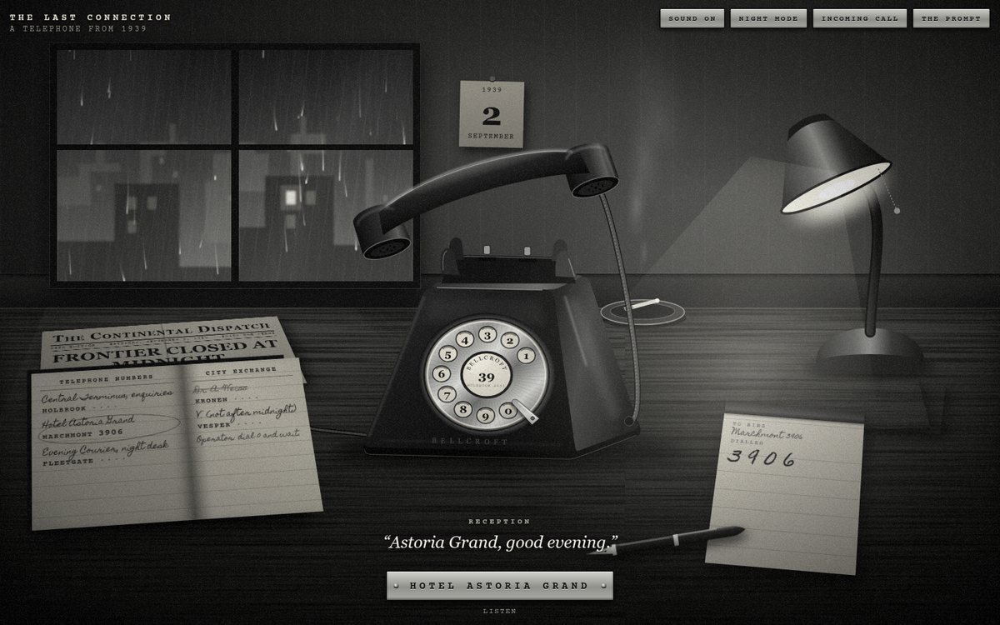
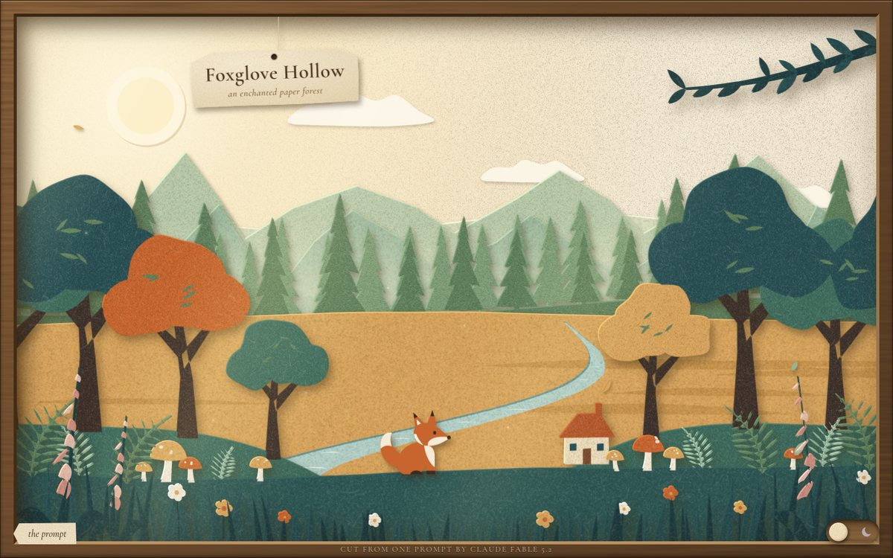
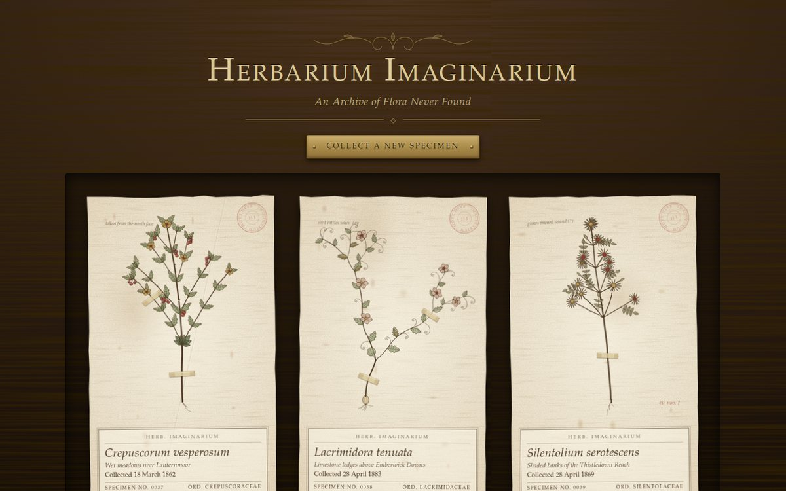

Three prompts, three pages
Each page below was built by Claude Fable 5.2 from one prompt. Each is a single HTML file with its CSS and JavaScript inline, no images and no build step. The full prompt is on every page, so you can compare what was asked with what came back.

The Last Connection
A 1939 rotary telephone. Lift the receiver, pick a number from the directory and drag the dial round to the stop. Pull it part of the way and it sends fewer pulses, like the real mechanism. Every sound is synthesised in the browser.
Open the office
Foxglove Hollow
A paper-cut forest in a shadow box, nine sheets deep. Move the pointer to look around inside it, press the fox to make it hop, and slide the switch for night. On a tall screen the scene is cut again to fit.
Open the box
Herbarium Imaginarium
A Victorian cabinet of plants that never existed. Each one is grown by an L-system from a numeric seed and drawn stroke by stroke. Collect a new specimen, examine it under a brass loupe, or press it flat.
Open the cabinet